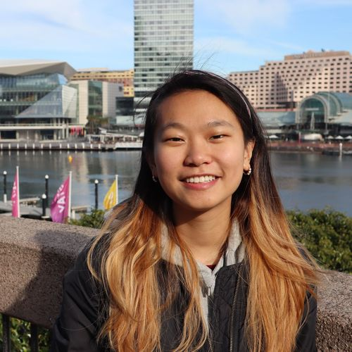
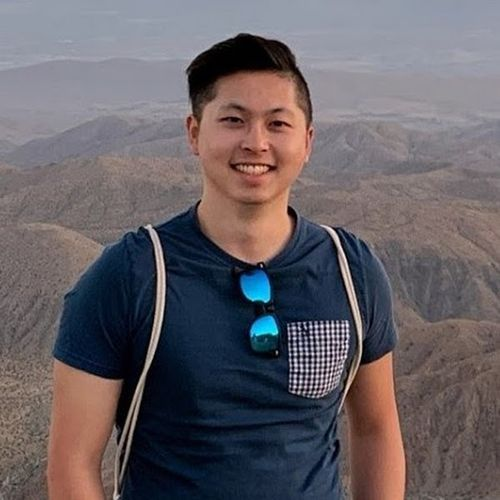
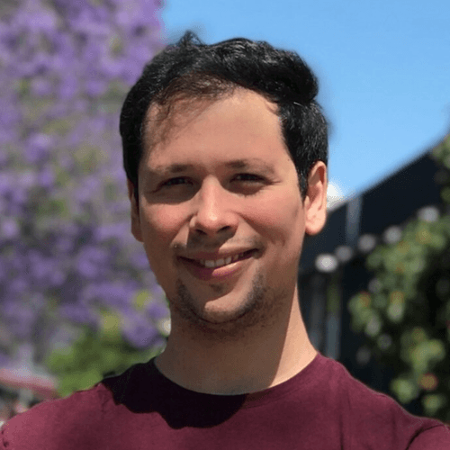

01
Urban · GPS
Urban navigation
Sidewalks, crossings, pedestrians. GPS waypoints across multiple cities.
A globally distributed competition pitting autonomous policies against expert human teleoperators. Same rovers, same missions, across 10+ cities.
State-of-the-art navigation lives in sim and curated datasets. We test it where it actually matters.
A shared, calibrated rover fleet across 14 sites worldwide. Same hardware, same missions, same network.
IROS 2024: top AI 15.4 vs human 42.0. ICRA 2025: 23.78 vs 30.0. The gap is closing fast.
Final round at IROS 2026 — local missions on the venue floor, results scored against the global field.
Mission scoring = difficulty × time. Highest aggregate wins.
Sidewalks, crossings, pedestrians. GPS waypoints across multiple cities.
Hallways, atriums, labs. Image-goal driven — no GPS.
Trails, slopes, gravel. Unstructured natural terrain.
Cross-domain endurance — urban → indoor → off-road, single policy.
Within 15 m GPS tolerance. Each mission scores its difficulty rating (1–10).
Sum of difficulty ratings across all completed missions. Highest aggregate wins.
Lowest cumulative completion time across shared missions wins ties.
Two open datasets of in-the-wild human-teleoperated drives across 10+ cities. FrodoBots-2K (~2,000 hours) is the curated subset used in the MBRA paper. Berkeley-FrodoBots-7K (~7,000 hours) is the full set, reannotated with MBRA for higher-fidelity action labels.
Host your model on your own compute. Stream front camera in, control commands out. GPS + map exposed.
View on GitHub →Up to 20 hours/week of pre-event testing across multiple cities. Bot-walker support, identical to venue conditions.
Allocations open with registration →Top AI score per edition, as a fraction of the all-time top human run. The bar fills toward the human ceiling.


